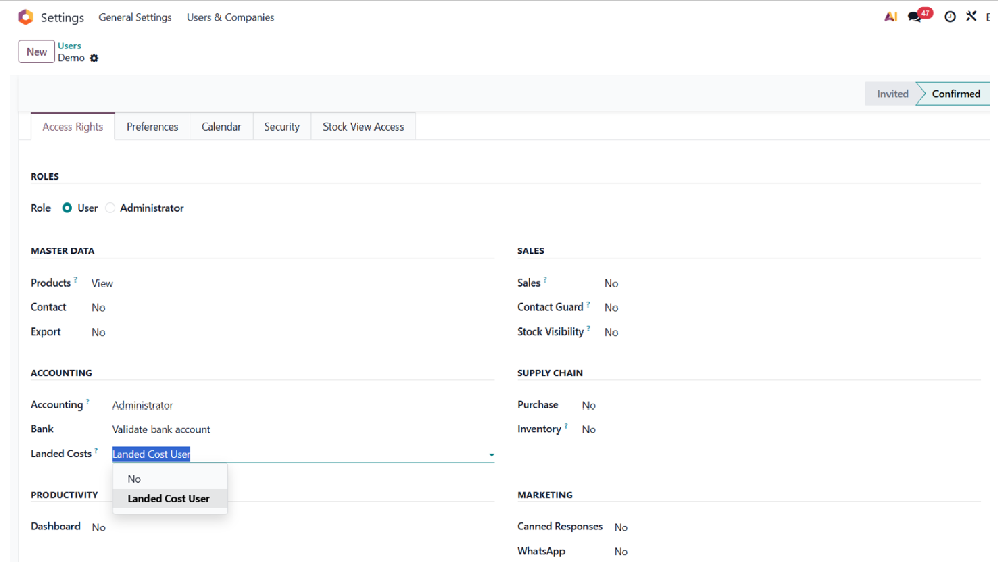
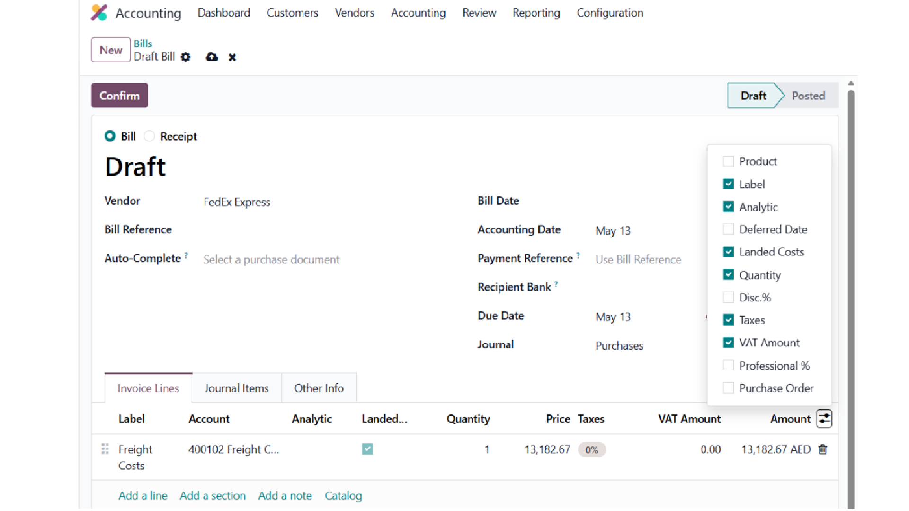
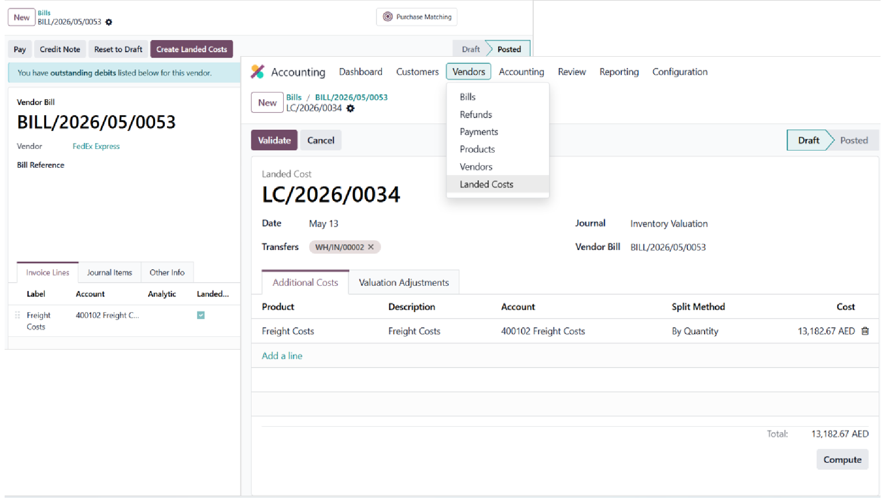

Keywords: landed cost access, landed cost for accountants, landed cost permission, landed cost without inventory admin, freight cost allocation, customs duty allocation, accounting landed cost, landed cost access control, inventory valuation adjustment, landed cost accounting, stock landed cost permission, vendor bill landed cost, bill of lading cost, shipping cost allocation, import duty allocation, ancillary cost distribution, landed cost user group, landed cost role, accounting inventory access, cost allocation permission
Native Odoo restricts landed cost management to the Inventory Administrator role. Accountants who need to allocate freight, customs, and other ancillary costs into inventory valuation must be granted full Inventory admin rights — which also unlocks Configuration, Adjustments, and all inventory operational menus.
This creates a security dilemma: either give accountants too much access, or force them to rely on inventory managers for every landed cost adjustment.
Adds a standalone Landed Cost User group that grants accounting users the ability to create, validate, and manage landed cost records, without unlocking any Inventory operational or configuration screens.
Pure permission layer. No new models, no new database fields, no business logic changes. Safe to install and uninstall at any time.
A new Landed Costs checkbox appears in the user form under the Accounting section. Check it to grant the user landed cost management access.
The group is independent of the Inventory permission level. A user can be an Invoicing user (or Accountant) with Landed Cost access, without any Inventory role at all.

The Landed Costs toggle in user settings, under the Accounting section. Enable it for any user who needs to manage landed costs.
Users in the Landed Cost User group see the same landed cost controls on vendor bills that were previously visible only to Inventory Administrators:

Vendor bill showing the Create Landed Costs button and Is Landed Cost checkbox — now visible to the Landed Cost User group, not just Inventory Administrators.
A new Landed Costs menu appears under Accounting → Vendors. It shows the same native list and form views used by Inventory Administrators, giving the accountant full lifecycle management:

Landed cost form view, accessible directly from the Accounting → Vendors menu. Full lifecycle management without Inventory Administrator rights.
All five native allocation methods are available:
| Method | Distributes by |
|---|---|
| Equal | Equal share per product line |
| By Quantity | Received quantity |
| By Current Cost | Current product cost (standard_price) |
| By Weight | Product weight |
| By Volume | Product volume |
| Model | Read | Write | Create | Delete |
|---|---|---|---|---|
| stock.landed.cost | Yes | Yes | Yes | Yes |
| stock.landed.cost.lines | Yes | Yes | Yes | Yes |
| stock.valuation.adjustment.lines | Yes | Yes | Yes | Yes |
| stock.picking (receipts) | Yes | No | No | No |
| stock.move | Yes | Yes* | No | No |
| stock.move.line | Yes | No | No | No |
| stock.location / warehouse | Yes | No | No | No |
| stock.lot | Yes | Yes* | No | No |
* Write on stock.move and stock.lot is required because native Odoo updates move valuation and lot average cost during landed cost validation without using sudo(). Without write access, validation would fail with an AccessError.
The Landed Cost User group does not unlock:
The group is purely additive. It does not imply any Inventory role and does not conflict with any existing permissions.
| User Role | Accounting Level | Landed Cost | Result |
|---|---|---|---|
| Accountant | Accountant | Yes | Full landed cost lifecycle from vendor bills |
| AP Clerk | Invoicing | Yes | Create and validate landed costs on bills |
| Inventory Admin | Any | Not needed | Already has full access via native Inventory Administrator |
| Sales User | None | No | No landed cost visibility (unchanged) |
stock_landed_costs
(native Odoo module, installed when Landed Costs is enabled
in Inventory settings).
Released under the GNU Lesser General Public License v3
(LGPL-3.0-or-later). The full license text is included in the
LICENSE file shipped with the module.
Maintained by SuiteState (ElectroState FZCO).
For questions, bug reports, or feature requests, visit
suitestate.com or contact
hello@suitestate.com.